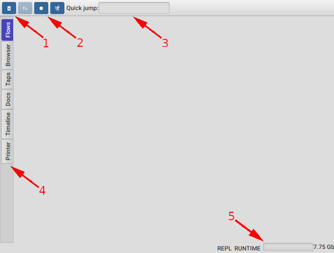
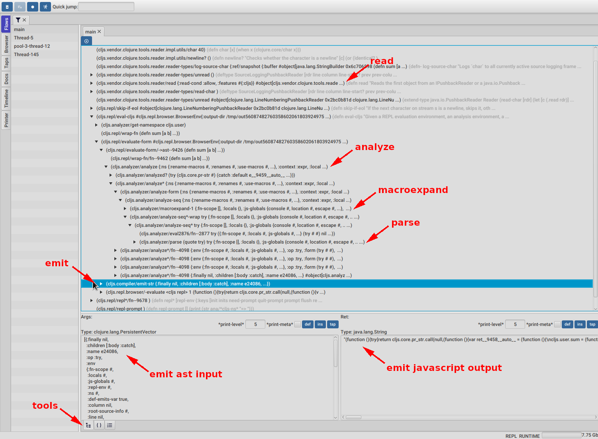

A blog Clojure, interactive programming, dev tooling and more...
This is (I hope) part of a series of blog posts with some ideas on using FlowStorm, a Clojure omniscient and time travel debugger, to help us reason about our Clojure systems.
This whole post is designed so you can follow along by copying the commands on your terminal, and will not depend on any particular IDE or special tooling appart from FlowStorm.
If you haven't seen it before, we call FlowStorm a debugger, since a lot of its features like code stepping, are those found on debuggers, but this could be a little too constraning, since I think it can be used for much more than chasing bugs.
FlowStorm was designed as a tool for visualizing what is happening inside our Clojure programs as they run, and specially designed with interactive programming and immutability in mind.
Before starting, for people new to Clojure and Lisps in general, interactive programming is about developing a system by interacting with a running process, in contrast with the more traditional way of : modify your files, re-compile everything, run the process, stop it, rinse and repeat. Immutability is about your programs dealing mostly with immutable values insted of references to mutable places in memory.
Interactivity and immutability alone are already quite powerful when trying to understand a system, given you can poke at it by call different functions, inspect the data, modify and recompile specific functions all without losing your application state or having to deal with long time compilation times.
Poking at systems via function calling, println (or the more modern tap>), scope capturing, single stepping etc are great tools when you know most of the system and you are confident that looking at specific points of your systems execution will be enough to reveal the answers of your questions.
The FlowStorm approach is to provide an easy way of recording and visualizing your programs execution when you need it.
This post will be using as an example, the "debugging" of the ClojureScript compiler, which is written in Clojure and compiles ClojureScript code into JavaScript. I've choosen it for demoing the techniques since it is a well known, non trivial, Clojure applicaiton, but all the techniques demoed here should apply to any Clojure application.
Following this post doesn't require any particular knowledge on compilers. The ClojureScript compiler can be seen as a system that will take a string representing Clojure code form, parses it into a tree of expressions also known as the AST (abstract syntax tree) which in this case is a nested Clojure maps structure, and then walks down the tree emitting strings containing JavaScript code. You can think of it like :
(-> code-string
(read)
(parse-into-ast)
(emit-js))
which is of course an over simplificaiton but should be enough for following the blog post.
For working with the ClojureScript compiler we first need its sources, so lets start by clonning the repo :
$ git clone https://github.com/clojure/clojurescript
$ cd clojurescript
Now we can setup FlowStorm by modifying the project deps.edn file like this :
{...
:aliases
{...
:storm
{:classpath-overrides {org.clojure/clojure nil} ;; for disabling the official compiler
:extra-deps {com.github.flow-storm/clojure {:mvn/version "1.11.1-11"}
com.github.flow-storm/flow-storm-dbg {:mvn/version "3.8.1"}}
:jvm-opts ["-Dclojure.storm.instrumentEnable=true"
"-Dclojure.storm.instrumentOnlyPrefixes=cljs"
"-Dflowstorm.startRecording=false"
"-Dclojure.server.repl={:port 5555 :accept clojure.core.server/repl}"]}}}
So there is quite a lot going on there but luckly we only need to do this once. We added a new alias :storm so we can easily start a repl with everything we need. The important parts there are :
cljs.*, and that recording should be disabled at startupNow we can finally run a Clojure repl with the :storm alias :
$ clj -A:storm
user=> :dbg
user=> (require 'cljs.main)
user=> (cljs.main/-main "--repl")
ClojureScript 0.0.249695361
cljs.user=>
Then, the first thing we do is to start the FlowStorm GUI, which we do by evaluating the :dbg key in this ClojureStorm repl. Immediately after it, we require the main ClojureScript compiler namespace and run the main function with the --repl arg which tells ClojureScript to start a browser repl. For people new to Clojure, the ClojureScript compiler is just a Clojure function we can invoke from our Clojure repl.
This should have opened a browser window and converted our Clojure repl into a ClojureScript one.
Everything you type there will be read, compiled into JavaScript and sent to the browser for execution.
Finally we will connect another Clojure repl to the same process our compiler is running by just connecting with telnet to the socket repl we defined earlier.
telnet 127.0.0.1 5555
user=>
And that is it, at this point we should have :

Main ui description before recording
Start recording
Evaluating a simple funciton like (defn sum [a b] (+ a b))
Stop recording

Main ui description after recording
Clearing the recordings
We are not going to focus much on the reader because it is (read)
Discuss this post here.
Published: 2023-10-19
Tagged: clojure